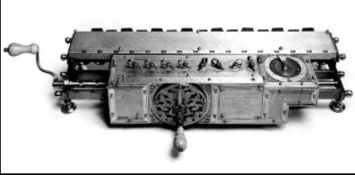
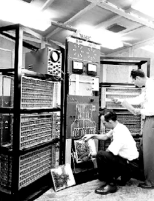
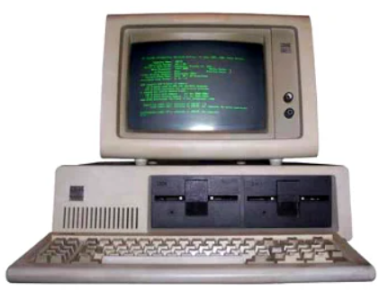
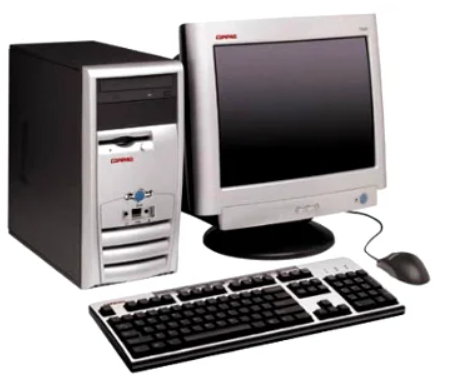
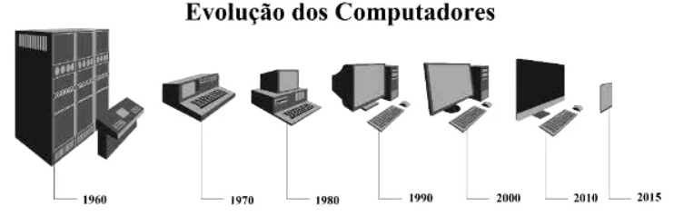
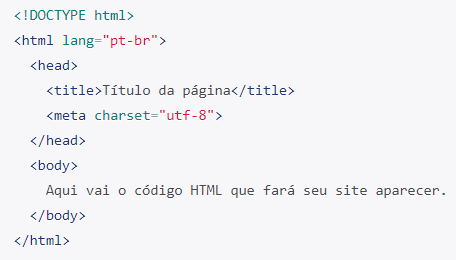

A palavra “computador” vem do verbo “computar” que, por sua vez, significa “calcular”. Sendo assim, podemos pensar que a criação de computadores começa na idade antiga, já que a relação de contar já intrigava os homens.
Dessa forma, uma das primeiras máquinas de computar foi o “ábaco”, instrumento mecânico de origem chinesa criado no século V a.C.
Dessa forma, uma das primeiras máquinas de computar foi o “ábaco”, instrumento mecânico de origem chinesa criado no século V a.C.
No século XVII, o matemático escocês John Napier foi um dos responsáveis pela invenção da "régua de cálculo". Trata-se do primeiro instrumento analógico de contagem capaz de efetuar cálculos logaritmos. Essa invenção foi considerada a mãe das calculadoras modernas.
Por volta de 1640, o matemático francês Pascal inventou a primeira máquina de calcular automática. Essa máquina foi sendo aperfeiçoada nas décadas seguintes até chegar no conceito que conhecemos hoje.
A primeira calculadora de bolso capaz de efetuar os quatro principais cálculos matemáticos, foi criada por Gottfried Wilhelm Leibniz.
Esse matemático alemão desenvolveu o primeiro sistema de numeração binário moderno que ficou conhecido com "Roda de Leibniz".
A primeira máquina mecânica programável foi introduzida pelo matemático francês Joseph-Marie Jacquard. Tratava-se de um tipo de tear capaz de controlar a confecção dos tecidos através de cartões perfurados.
George Boole (1815-1864) foi um dos fundadores da lógica matemática. Essa nova área da matemática, se tornou uma poderosa ferramenta no projeto e estudo de circuitos eletrônicos e arquitetura de computadores.
Já no século XIX, o matemático inglês Charles Babbage criou uma máquina analítica que, a grosso modo, é comparada com o computador atual com memória e programas.
Através dessa invenção, alguns estudiosos o consideram o “Pai da Informática”.
Assim, as máquinas de computar foram cada vez mais incluindo a variedade de cálculos matemáticos (adição, subtração, divisão, multiplicação, raiz quadrada, logaritmos, etc).
O computador, tal qual conhecemos hoje, passou por diversas transformações e foi se aperfeiçoando ao longo do tempo, acompanhando o avanço das áreas da matemática, engenharia, eletrônica. É por isso que não existe somente um inventor.
De acordo com os sistemas e ferramentas utilizados, a história da computação está dividida em quatro períodos.
Os computadores de primeira geração funcionavam por meio de circuitos e válvulas eletrônicas. Possuíam o uso restrito, além de serem imensos e consumirem muita energia.
Um exemplo é o ENIAC (Eletronic Numerical Integrator and Computer) que
consumia cerca de 200 quilowatts e possuía 19.000 válvulas.
Ainda com dimensões muito grandes, os computadores da segunda geração funcionavam por meio de transistores, os quais substituíram as válvulas que eram maiores e mais lentas. Nesse período já começam a se espalhar o uso comercial.
Os computadores da terceira geração funcionavam por circuitos integrados. Esses substituíram os transistores e já apresentavam uma dimensão menor e maior capacidade de processamento.
Foi nesse período que os chips foram criados e a utilização de computadores pessoais começou.
Com o desenvolvimento da tecnologia da informação, os computadores diminuem de tamanho, aumentam a velocidade e capacidade de processamento de dados. São incluídos os microprocessadores com gasto cada vez menor de energia.
Nesse período, mais precisamente a partir da década de 90, há uma grande expansão dos computadores pessoais.
Além disso, surgem os softwares integrados e a partir da virada do milênio, começam a surgir os computadores de mão. Ou seja, os smartphones, iPod, iPad e tablets, que incluem conexão móvel com navegação na web.
Segundo a classificação acima, nós pertencemos à quarta geração dos computadores, o que revela uma evolução incrível nos sistemas de informação.
Um ponto de destaque é que a evolução dos computadores ocorria de maneira mais lenta. Com o desenvolvimento da sociedade, meios de comunicação e a divulgação científica podemos ver a evolução dessas máquinas em dias ou meses.
Alguns estudiosos preferem acrescentar a “Quinta Geração de Computadores” com o aparecimento dos supercomputadores, utilizados por grandes corporações como a NASA.
Nessa geração, é possível avaliar a evolução da tecnologia multimídia, da robótica e da internet.
Em uma infraestrutura cliente-servidor, cliente é um dispositivo de computação, como desktops, laptops, smartphones, tablets ou aplicativos que, através de protocolos de rede se conectam a servidores para fazer uma solicitação de serviço ou recurso e aguarda a resposta.
Já o servidor é o componente do sistema que fornece os serviços ou recursos solicitados pelos clientes. Estes servidores podem ser um computador projetado especificamente para gerenciar e fornecer serviços aos clientes, ou ainda, um software que é executado em um servidor de rede.
O documento HTML sempre inicia com o que chamamos de estrutura básica. Esta estrutura é quase que imutável. Sempre será dessa forma e você sempre, sempre começará seu HTML começando por esse código. Geralmente os editores como o VsCode já tem atalhos para iniciar os documentos HTMLs com essa estrutura, logo, você não precisa se preocupar em decorá-la, mas é bom que faça. Veja abaixo como ela se inicia:
É possível compreender o documento em HTML de uma maneira muito simples, através de uma divisão de blocos das tags essenciais, conforme a a seguinte estrutura:
Uma coisa importante: SEMPRE deve existir o doctype.
O doctype não é uma tag HTML, mas uma instrução para o navegador e outros programas que podem ler seu site, que o código encontrado ali é um código HTML. Assim eles sabem o que fazer para mostrar seu site da melhor forma possível. Lembre-se: o doctype é OBRIGATÓRIO e deve ser sempre a PRIMEIRA LINHA do seu documento.
Contém informações que não são transpostas visivelmente para o usuário/leitor do documento. São dados implícitos, de uso e controle do documento: vinculação com outros arquivos, aplicação de lógica de programação de scripts e metadados. Na prática, todo o conteúdo do cabeçalho fica delimitado entre a abertura e fechamento tag head.
Trata-se do documento em si, ou seja, a informação legível para o usuário/leitor do documento. É todo e qualquer texto que se deseja apresentar, assim como toda e qualquer forma de mídia de saída (imagens, sons, miniaplicativos embutidos, conteúdo multimídia, etc). Além disso, toda a apresentação de entrada de dados (formulários) também se aplica neste seção do documento. Na prática, o corpo do documento é delimitado pelo par de tags body e /body.
Este é o preceito básico que deve estar muito bem claro para você: onde as marcações se aplicam, e quais são os resultados deste modelo. Por exemplo: se vocês deseja informar conteúdo textual para saída legível ao usuário do seu sistema web, esta marcação deverá obrigatoriamente estar no bloco do corpo da página. Ainda: para definir qual o tipo de codificação da página (uma meta informação do documento), esta deve obrigatoriamente estar marcada no cabeçalho do mesmo documento.
Dentro do elemento BODY sua estrutura de página terá os elementos semânticos da construção da sua página, onde serão declarados e identificados cabeçalhos, rodapé, conteúdo principal, etc.
A principal diferença entre a lista ordenada e a lista não-ordenada está na maneira com que os itens de cada lista são apresentados - a lista ordenada enumera os elementos; a lista não-ordenada coloca marcadores antes de cada elemento.
Uma lista ordenada é delimitada pelas etiquetas OL e OL. Cada item da lista é delimitado pelas etiquetas LI e LI.
A estrutura da lista não-ordenada é semelhante a da lista ordenada - porém, ao invés de ser construída com o elemento OL, é construída com o elemento UL